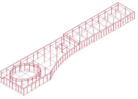

Lights on
Signature scroll moment, pinned for about 3 screens. It starts in daylight: travertine paper and her red-line axonometry of Aura Theatre. As you scroll, the page darkens like a sunset, the red lines warm to lamplight, and the building comes on window by window until her dusk render is fully lit. Reduced motion shows the three states as stills.

scroll 10%Day: her drawing scroll 50%Dusk: lines warm, building surfacesscroll 100%Aura Theatre
scroll 50%Dusk: lines warm, building surfacesscroll 100%Aura Theatre